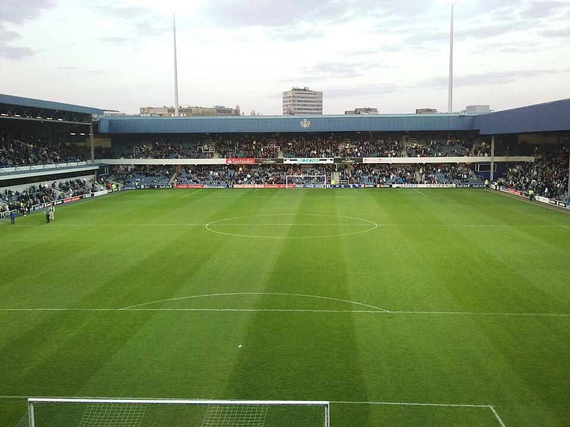
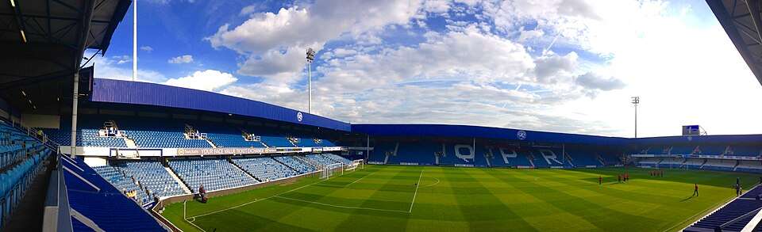
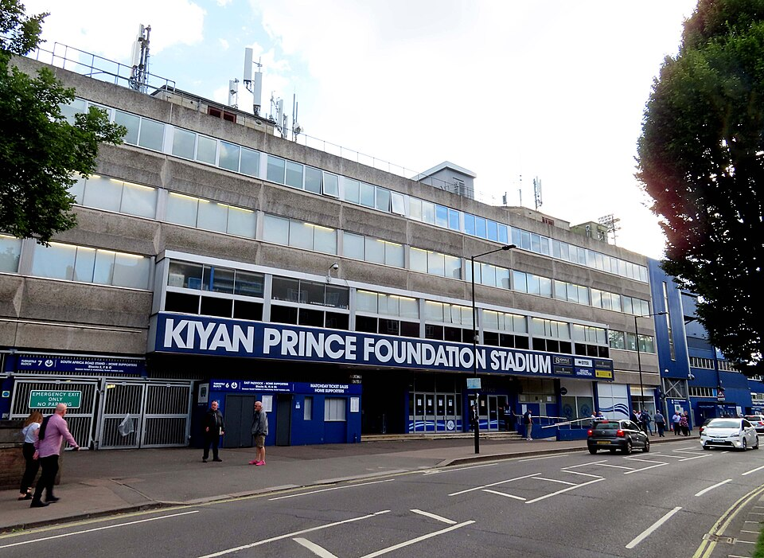

Early Years
Queens Park Rangers trace their roots back to 1882 in west London. The club as we know it was formed in 1886, when Christchurch Rangers merged with St Jude's Institute. QPR moved between many different grounds before settling at Loftus Road in Shepherd's Bush in 1917. The club has played there ever since.

Wembley Glory in 1967
In 1967 QPR beat West Bromwich Albion 3–2 in the first League Cup final ever played at Wembley. They came back from 2–0 down and became the first Third Division club to win the trophy. They also won the Third Division title that same season.
Top-Flight Highs
In 1975–76 QPR came agonisingly close to being champions of England, finishing second, just one point behind Liverpool. In 1982 they reached the FA Cup final, losing to Tottenham Hotspur in a replay. QPR were also founder members of the Premier League in 1992 and finished fifth in its first season, the highest of any London club.

Modern Times
Under manager Neil Warnock, QPR won the Championship in 2010–11 to return to the Premier League, with captain Adel Taarabt named the Championship Player of the Year. In 2014 they won promotion again with a dramatic play-off final win over Derby County at Wembley, as Bobby Zamora scored in the 90th minute.

In 2019 Loftus Road was renamed the Kiyan Prince Foundation Stadium, in memory of Kiyan Prince, a young QPR academy player who was killed in 2006. The name supports the foundation set up in his honour.
